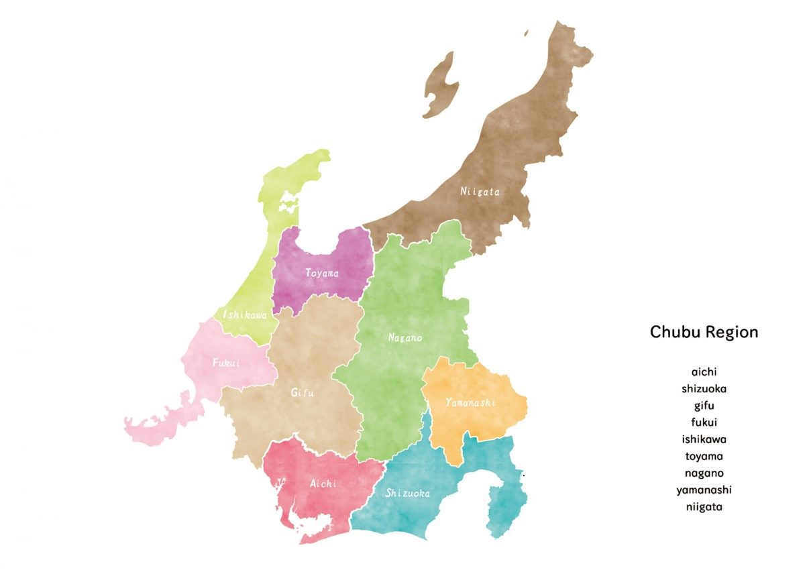

Chubu
is located in the middle of Japan's main island. In general, it consists of nine prefectures : Aichi, Shizuoka, Gifu, Fukui, Isikawa, Toyama, Nagano, Yamanashi, Niigata.
One of the major cities there is Nagoya in Aichi. Mt. Fuji, known as the highest mountain in Japan, is on the boundary of Shizuoka and Yamanashi.
